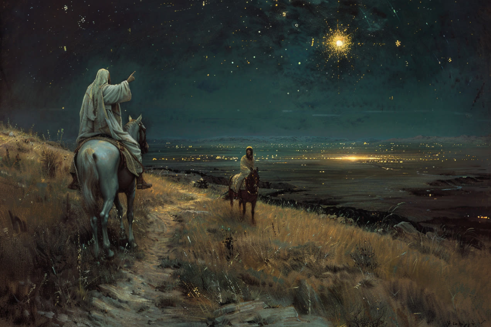

Palace of Art Photographs Ayyubov and Saparbekov Rooms for TSU Digital Archive
Published: November 21, 2026
The national gallery in Iyık Janyl has photographed 87 paintings at high resolution, with the images going first to Talas State University's archive.
Read More